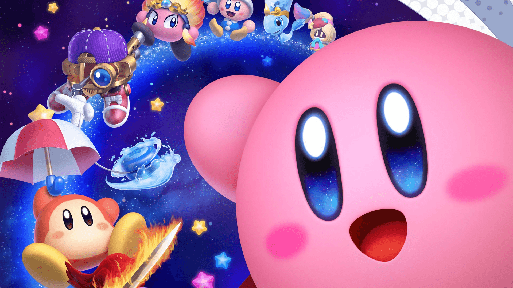
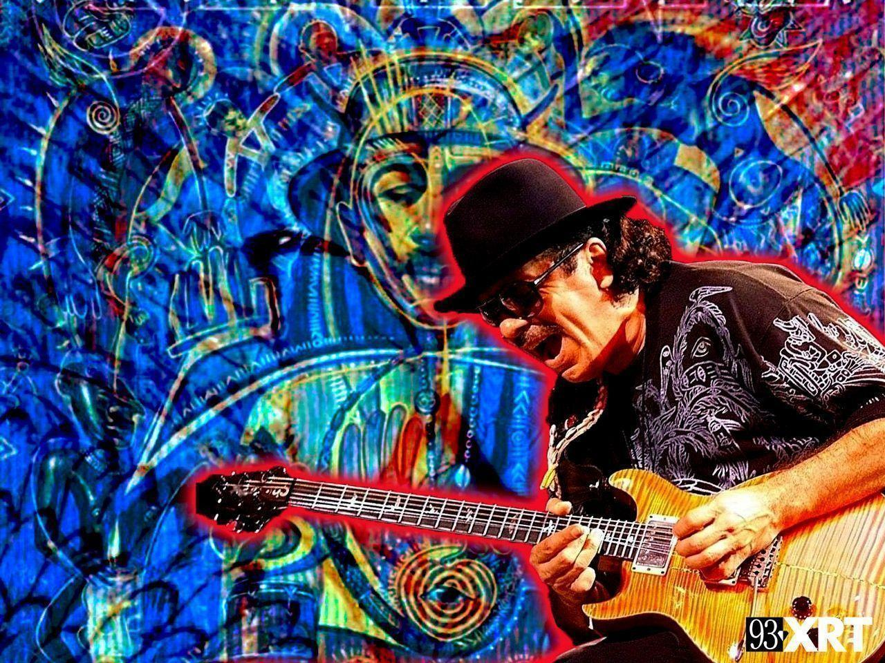

<style>
      .bd-placeholder-img {
        font-size: 1.125rem;
        text-anchor: middle;
        -webkit-user-select: none;
        -moz-user-select: none;
        user-select: none;
      }

      @media (min-width: 768px) {
        .bd-placeholder-img-lg {
          font-size: 3.5rem;
        }
      }
    </style>
<main>

  <div id="myCarousel" class="carousel slide" data-bs-ride="carousel">
    <div class="carousel-inner">
      
      <div id="background"class="carousel-item active">
       
        <div class="container">
          
          <div class="carousel-caption text-start">
            
            <h1 class="txt-text">Where our passions started</h1>
            <p class="paragraphs">Teens Exploring Technology opened up doors for us academically and mentally. Learn how we changed our lives.</p>
            
            <a id="button"class="btn btn-lg btn-dark" href="oaxaca-article">Check it out</a>
          </div>
        </div>
      </div>
      <div class="carousel-item">
       

        <div class="container">
          <div class="carousel-caption">
           
          </div>
        </div>
      </div>
      <div class="carousel-item">
        

        <div class="container">
          <div class="carousel-caption text-end">
           
          </div>
        </div>
      </div>
    </div>
   
      
    
  </div>


  <!-- Marketing messaging and featurettes
  ================================================== -->
  <!-- Wrap the rest of the page in another container to center all the content. -->

  <div class="container marketing">

    <!-- Three columns of text below the carousel -->
    <div class="row">
      <div class="col-lg-4">
        

        <h2 class="txt">Oscar Menjivar</h2>
        <p>TXT:Teens Exploring Technology was founded by Oscar Menjivar, a 2008 graduate of Jordan High School His lack of access to tech classes as an adolescent inspired him to start TXT:Teens Exploring Technolgy as a way to empower teens from impoverished neighborhoods to achieve their full potential.</p>
        <p><a class="btn btn-light" href="https://www.linkedin.com/in/oscar-menjivar-3133975/" target="_blank">View details &raquo;</a></p>
      </div><!-- /.col-lg-4 -->
      <div class="col-lg-4">
        
        <h2 class="txt">Roque Pech</h2>
        <p>Roque Pech is the Director of Programs at TXT. He's a first generation college graduate who was born in Mexico and raised in Wilmington. After learning about TXT, Roque decided to join the team and help the mission serving young men of color.</p>
        <p><a class="btn btn-light" href="https://www.linkedin.com/in/roquepech/" target="_blank">View details &raquo;</a></p>
      </div><!-- /.col-lg-4 -->
      <div class="col-lg-4">
        

        <h2 class="txt">Alejandro Bernal</h2>
        <p>Alejandro is a recent Computer Science graduate of California State University, Los Angeles. He has a passion for Tech and enjoys learning about new trends in the field of Web Development, Machine Learning and Game Development. Alejandro has been part of TXT since 2012, when he first joined the Summer Leadership Academy. </p>
        <p><a class="btn btn-light" href="https://www.linkedin.com/in/alejandro-bernal-638085168/"target="_blank">View details &raquo;</a></p>
      </div><!-- /.col-lg-4 -->
    </div><!-- /.row -->


    <!-- START THE FEATURETTES -->

    <hr class="featurette-divider">

    <div class="row featurette">
      <div class="col-md-7">
        <h1 id="headings">WHY MUSIC AND GAMING?</h1>
        <p id="game-paragraphs">When creating an application that displays our passions, we knew that we had to hone in in music. When I was in middle school, I got my first guitar anf my passion for music grew as I got older. At that same age, Adelmo was 
        growing and developing his passion for gaming. Today Adelmo participates in Clash Royale tournamets where he competes to be the best. Me and Adelmo are both extremely passionate about gsming and music. Together we have created 
        what we are extremely proud of.When creating an application that displays our passions, we knew that we had to hone in in music. When I was in middle school, I got my first guitar anf my passion for music grew as I got older. At that same age, Adelmo was 
        growing and developing his passion for gaming. Today Adelmo participates in Clash Royale tournamets where he competes to be the best. Me and Adelmo are both extremely passionate about gaming and music. Together we have created 
        what we are extremely proud of.</p>
      </div>
      <div class="col-md-5">
        


      </div>
    </div>

    <hr class="featurette-divider">

    <div class="row featurette">
      <div class="col-md-7 order-md-2">
        <h1 id="headings">HOW HAS GAMING CHANGED MY LIFE?</h1>
        
        <p id="game-paragraphs">Gaming communities across our city, and country have developed greatly throughout the years. I have many friends
          from TXT who are passionate about gaming whether it be on PC, Console, or Mobile. Through playing online through games such as Minecraft, 
          we are able to strengthen our brotherhood and create ways to overcome obstacles. Gaming is really an outlet for me to create new friendships
          and strengthen old ones. Also, it's just super fun! Creating new worlds with your friends or fighting as teams to achieve victory is the ultimate experience.
        </p>
      </div>
      <div class="col-md-5 order-md-1">
        

      </div>
    </div>

    <hr class="featurette-divider">

    <div class="row featurette">
      <div class="col-md-7">
        <h1 id="headings">HOW HAS MUSIC CHANGED MY LIFE?</h1>
        <p id="game-paragraphs">
          Music is a passion that will forever burn in my heart. It grew when I was a 6th grader in middleschool the day I got my first guitar. It was an immense journey for me, where at times I felt like giving up  because it was hard.
          My fingers hurt and I felt like I would never get it. 5 years later I can play my favorite songs and create music with other people. I enjoy listening to corridos that are present within my latin culture.
          Music is a huge part of my Oaxacan culture and is a reason why I enjoy it so much. We practice traditions such as playing 'sones y jarabes' and danzas that are vital parts to our festivals
          and parties we host for our patron saints. Music truly is what shaped me into a creative and passionate person.
        </p>
      </div>
      <div class="col-md-5">
        

      </div>
    </div>

    <hr class="featurette-divider">

    <!-- /END THE FEATURETTES -->

  </div><!-- /.container -->

</main>
<script src="../assets/dist/js/bootstrap.bundle.min.js"></script>